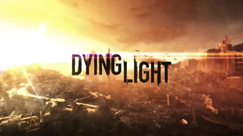

Dying Light est un jeu vidéo d'action, d'horreur et de survie à la première personne, développé par Techland et sorti en 2015. Le jeu se déroule dans la ville fictive de Harran, où une épidémie a transformé une grande partie de la population en zombies.
Le joueur incarne Kyle Crane, un agent envoyé en mission dans cette ville pour récupérer des informations importantes. Mais très vite, sa mission devient beaucoup plus dangereuse qu'il ne l'imaginait. Il doit survivre dans un monde rempli de zombies, aider les survivants et faire des choix difficiles.
L'une des particularités de Dying Light est son système de parkour, qui permet de courir sur les toits, grimper aux bâtiments, sauter par-dessus les obstacles et échapper aux ennemis. Le joueur peut également fabriquer des armes, récupérer des ressources et améliorer ses compétences pour devenir plus fort.
Le jeu possède aussi un cycle jour-nuit très important. Pendant la journée, il est généralement plus facile d'explorer la ville et de chercher des provisions. Mais lorsque la nuit tombe, des créatures beaucoup plus dangereuses apparaissent, ce qui rend les déplacements beaucoup plus stressants.
En conclusion, Dying Light est un jeu qui mélange action, exploration, peur et survie. Grâce à son ambiance inquiétante, à ses combats et à sa liberté de déplacement, il propose une expérience intense dans un monde envahi par les zombies.